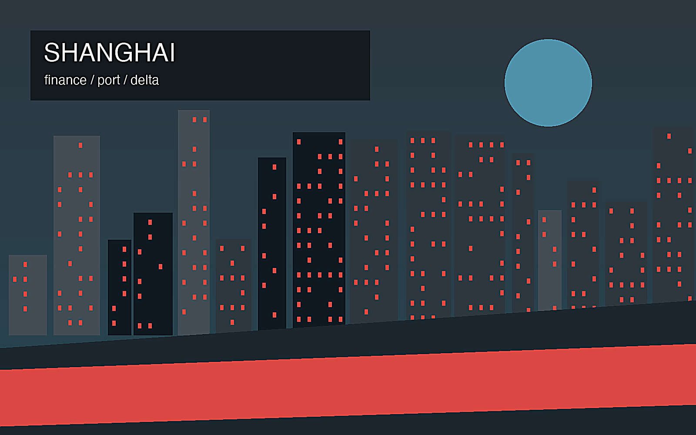
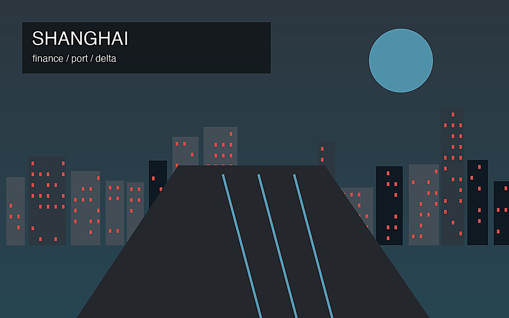

地政学
長江の出口を押さえ、中国内陸の生産力を世界市場へ出すゲートとして機能する。

🇨🇳 中国 / アジア / World City Atlas
長江デルタの金融・港湾都市。世界都市として、経済規模だけでなく、地理、産業、宗教文化、暮らし、観光を分けて読みます。
都市の骨格
長江の出口を押さえ、中国内陸の生産力を世界市場へ出すゲートとして機能する。

長江の出口を押さえ、中国内陸の生産力を世界市場へ出すゲートとして機能する。
金融と商業の中心であり、周辺には自動車、電子、化学、半導体、港湾物流の産業帯がある。
道教、仏教、キリスト教、イスラム教が混在し、海派文化は江南、租界、現代消費を重ねる。
外灘、浦東、旧フランス租界、南京路、豫園、高層住宅と路地生活の対比が見どころ。
Geography
都市の経済力は、地図上の位置、港湾、鉄道、空港、河川、周辺都市との関係から生まれます。
長江の出口を押さえ、中国内陸の生産力を世界市場へ出すゲートとして機能する。
上海を単体の市街地としてではなく、周辺の住宅地、産業地、物流施設、教育機関と接続した都市圏として見ると、GDPの大きさが日々の通勤、土地利用、観光、文化施設の配置にどう表れているかが分かります。
金融と商業の中心であり、周辺には自動車、電子、化学、半導体、港湾物流の産業帯がある。
この都市では、華やかな中心業務地区の背後に、清掃、建設、配送、調理、介護、教育、保守、警備といった日常的な労働があります。都市の経済規模を見るときは、数字だけでなく、その数字を支える人と場所を同時に見る必要があります。
Industry
主力産業だけでなく、周辺の小さな仕事が都市を毎日動かしています。
Culture
宗教施設、祭礼、市場、劇場、大学、移民地区は、都市の経済とは別の時間を保存します。
道教、仏教、キリスト教、イスラム教が混在し、海派文化は江南、租界、現代消費を重ねる。
外灘、浦東、旧フランス租界、南京路、豫園、高層住宅と路地生活の対比が見どころ。